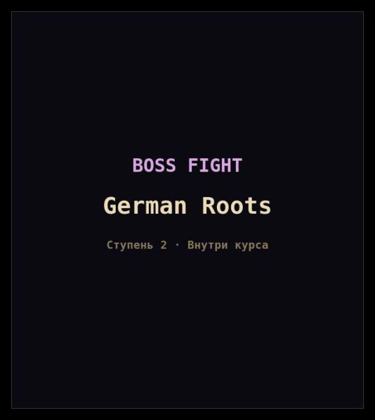

Английский · шесть ступеней · один путь
Система погружения в английский
один путь, шесть ступеней
Неважно, английский у вас родной или второй: путь из шести ступеней — от выживания до мастерства и дальше за него. Две ступени идут с игрой бесплатно. Четыре — это наборы Roots. Каждая карточка английская, и учит она по-английски.
Один путь, шесть ступеней
Базовая игра держит пол и потолок обычного курса погружения. Два набора Roots лежат внутри курса, два — за его пределами. Читайте лестницу сверху вниз.
Начинайте с Advance, если школа вас подвела или английский для вас в новинку. В остальных случаях начинайте с German Roots.
Если ваш родной язык романский, возьмите Norman Roots раньше German Roots.
Базовая игра держит пол и потолок. German Roots и Norman Roots лежат внутри курса. Latin Roots и Greek Roots — за его пределами. English Advance берут по желанию, если школьное образование у вас было обычным. Latin Roots и Greek Roots целиком по желанию. Брать наборы по порядку никто не обязывает; лестница — это рекомендация.
Два слоя, из которых сделан английский
German Roots и Norman Roots — это пара внутри курса. Это два слоя, из которых сшит английский, — тот, что остался от времён до 1066 года, и тот, что пришёл с Завоеванием, — и лежат они между English Advance и English Adept.
Они — причина того, что в английском есть begin и commence, ask и demand. В конце German Roots вы видите шов в сложном слове и читаете по нему значение. В конце Norman Roots вы читаете второй слой английского как слой, а не как список трудных слов.
Германская основа повседневного английского — слова, которые вы уже наполовину знаете. Отсюда начинает тот, у кого родной язык германский, и это вариант по умолчанию для всех остальных.
Подробнее →Второй английский — 1066 год и французский, пришедший с ним. Отсюда начинает тот, у кого родной язык романский.
Подробнее →Выше потолка, для любопытных
Latin Roots и Greek Roots — это пара за пределами курса. Они идут после English Adept, для тех, кому нужен учёный слой и лексика наук. Хобби для любопытных к языку — и ничуть от этого не хуже.
Часть курса — и дальше той черты, за которой это кому-либо нужно. К концу этой пары незнакомое техническое или литературное слово перестаёт быть незнакомым: вы разбираете его с первого взгляда, а границы между европейскими языками начинают выглядеть как границы диалектов.
Английский, построенный из своих частей — классический и научный слой, собранный. Каждая карточка даёт рядом с заглавным словом парное родственное.
Подробнее →Лексика науки, медицины и абстракции — слой над латынью, с греческим письмом прямо на карточке.
Подробнее →Latin Roots и Greek Roots идут после Adept, в любом порядке на ваш выбор.
Что вы получаете
Посчитано по самим наборам, а не по рекламному тексту. Пять уровней в каждом наборе. Бой с боссом в конце каждого кластера.
| Ступень | Карточки | Слова | Кластеры | Уроки | Входит как |
|---|---|---|---|---|---|
| English Advance | 500 | 500 | 25 | 15 | базовая игра |
| German Roots | 1000 | 1000 | 47 | 48 | DLC |
| Norman Roots | 1000 | 1000 | 48 | 49 | DLC |
| English Adept | 1000 | 1000 | 56 | 12 | базовая игра |
| Latin Roots | 500 | 1000 | 30 | 31 | DLC |
| Greek Roots | 1000 | 1000 | 56 | 62 | DLC |
В Latin Roots 500 карточек, потому что каждая из 500 даёт рядом с заглавным словом парное родственное: 1000 слов. Там, где у ступени уроков меньше, чем кластеров (Advance, Adept), её уроки открывают главы, а не стоят у двери каждого кластера; в четырёх наборах Roots урок стоит у двери каждого кластера, и там он обязателен.
На каждой карточке, на каждой ступени
Одна и та же анатомия карточки — от пола до последнего греческого корня.
Карточка
- заглавное слово, по-английски
- определение, по-английски — никогда не перевод
- пример предложения
- второй пример — то же слово ещё раз или родственное ему, тот кузен или близнец, которого дальше разбирают заметки
- строка Notes: часть речи, части, из которых собрано слово, этимон
- синонимы на каждой карточке Adept, German Roots, Norman Roots и Greek Roots; антонимы там, где есть настоящий
- разделение британского и американского написания отдельным слоем — см. ниже
Игра
- бой с боссом в конце каждого кластера — восемь заглавных слов на сетке, ответ на цифровом блоке клавиатуры
- Интервальное повторение по Фибоначчи между боями
- урок у двери каждого кластера во всех четырёх наборах Roots
- три упражнения на повторение в каждом наборе: полка корней, антонимы и пропуски в German, Latin и Greek Roots; вместо полки диктант в Norman Roots (его карточки — цельные старофранцузские слова, а не суммы) и в Adept
Каждый кластер кончается боем
Восемь заглавных слов на сетке, ответ на цифровом блоке клавиатуры. Правильный ответ продвигает вас на одну позицию по дорожке.
Неправильный отбрасывает вас на две позиции назад, а на позициях три и четыре ждут как раз те карточки, которые вы знаете хуже всего, — так что кластер не победить, пока не побеждены его самые трудные слова.
Победите его — и эти карточки навсегда покинут вашу ежедневную колоду.

попробовать демоАнглийский, что бы ни говорило меню
Текст карточек английский, какой бы ни был язык интерфейса. Интерфейс, названия кластеров и уроки Advance переведены на немецкий, испанский, японский, русский и китайский. Карточки — никогда: ни одна карточка ни в одном из шести наборов не несёт поля на другом языке. Именно эту работу выполняет слово погружение , когда оно стоит здесь.
В каждом наборе различие британского и американского написания вынесено в отдельный слой: британский близнец заглавного слова, обоих примеров, определения и заметок — всюду, где британский текст расходится с американским, и задаётся он вашими настройками написания или английским голосом.
Шесть ступеней, одна серия
Шесть ступеней складываются в одну серию: четыре DLC Roots — German и Norman внутри курса, Latin и Greek за его пределами — вместе с базовой игрой, которая несёт в себе English Advance и English Adept. Взятые серией, пол, два слоя английского, потолок и два Roots за ним приходят одним курсом, а не шестью отдельными наборами. Есть в Steam.
FlashBoss Корни — Полная серия — это пять позиций в одной: базовая игра, которая бесплатно несёт в себе English Advance и English Adept, и четыре набора Roots. Уже владеете частью набора? Steam возьмёт плату только за остальное.
Начинайте там, где говорит лестница.
Пол и потолок идут с игрой бесплатно. Четыре набора Roots есть в Steam — вместе или по одному.
FlashBoss Корни — Полная серия →Scientia est Potentia.Знание — сила